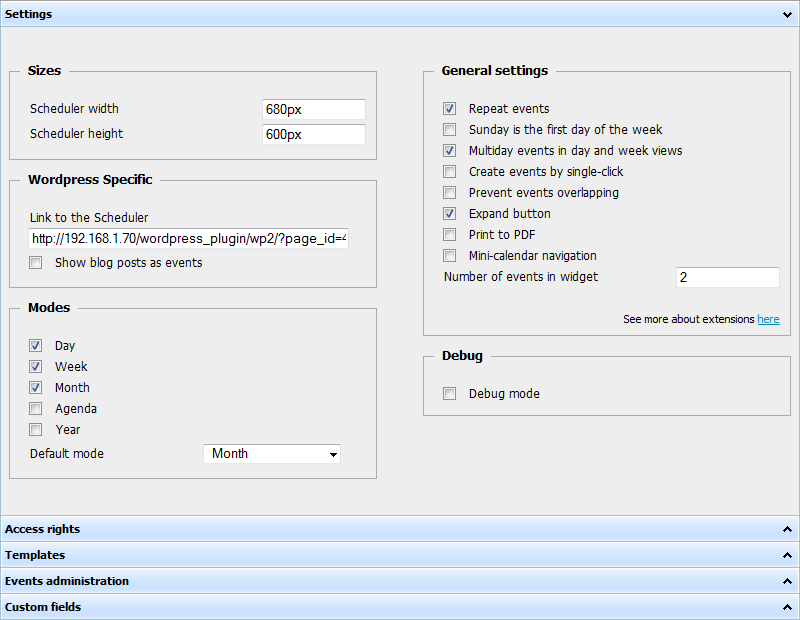
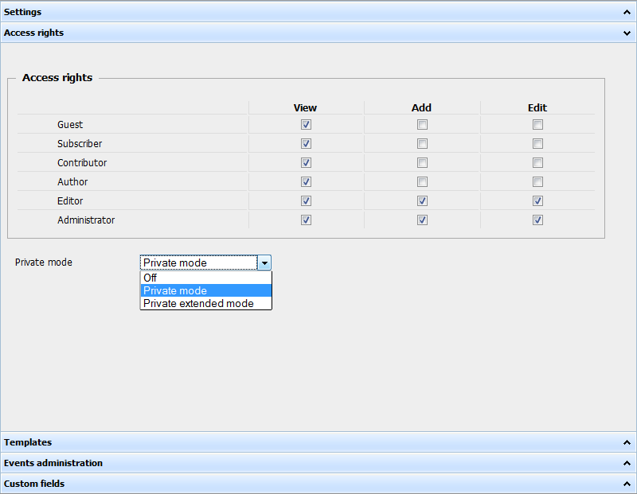
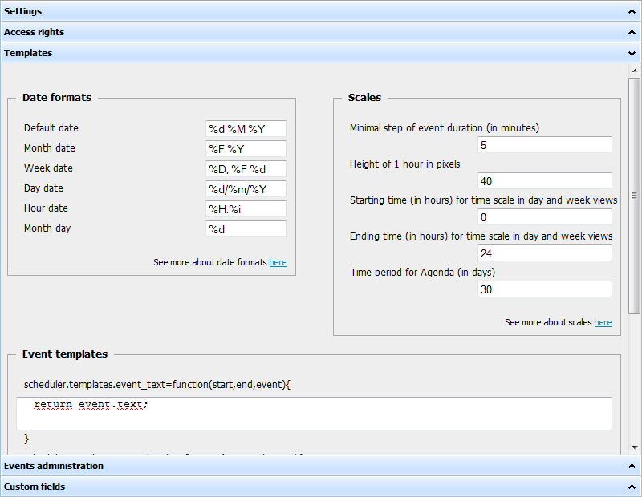
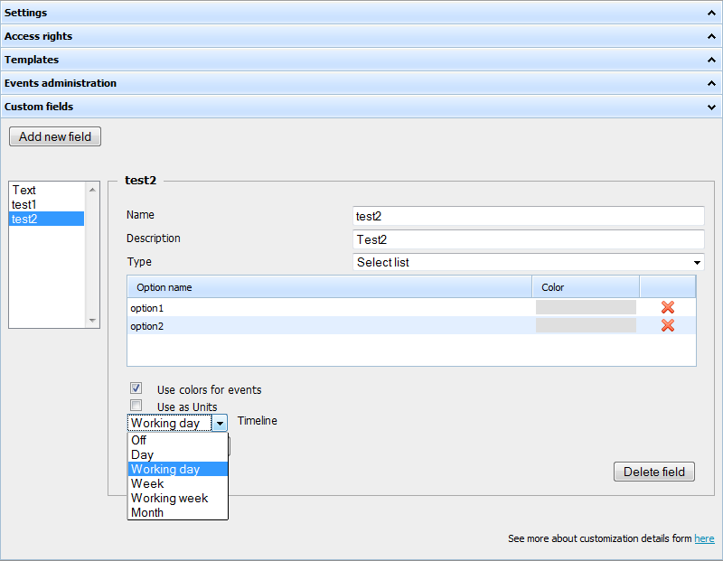

Universal plugin control panel
Before changing anything, beware that settings will be applied only after pressing “Save” button. If you leave page without saving - all changes will be lost.
Settings

- Width and height - size of scheduler on the page
- Link - link to the page, where scheduler is placed
- Debug mode - can be used to get detailed report when data is not loaded or not saved correctly
- Repeat events - enables support of recurring events
- Prevent overlapping - allow only one event in the same timeslot
- Mini-calendar - adds mini-calendar icon on top, and calendar based edit-form.
- Modes - list of tabs, which will be on top of scheduler
Access rights

Allows to define access level for different groups of users:
- Add - ability to create new events
- Edit - ability to edit existing events
- Show - ability to see the scheduler
And set private mode:
- off - events are public. Users see and can edit (if the appropriate check is set) all events
- Private mode - users see and can edit (if the appropriate check is set) just self-created events
- Private extended mode - users see all events but can edit (if the appropriate check is set) just self-created ones
Templates

You can define
- format of dates
- time scales
- how text is rendered inside events ( which can be used to show info from custom fields )
Administration

Panel shows the list of all events in the editable grid, you can add | delete | edit | reload events here.
Custom fields

Panel allows to define custom fields, which will be linked to events.
There are two types of custom fields
- Textarea - plain text field
- Select list - select box with list of options
Each field can have
- Name - the name of a field in DB ( will be created automatically )
- Description - will be used in edit-form
Select list fields have also extra flags
- “use as colors” - allows to define which color event will have, based on custom field value
- “use as units” - creates an unit view based on list of options
- “Timeline” - creates a timeline view where you can choose time-scale unit:
- Day
- Working Day
- Week
- Working week
- Month
Depending on your needs you can choose one or both of these views.
http://docs.dhtmlx.com/doku.php?id=dhtmlxscheduler:units_view
For advanced users
For advanced users we offer extra possibility - to wide available functionality.
All you need - scheduler_include.html file (you can find it in the plugin's folder: you_wordpress/wp-content/plugins/event-calendar-scheduler/scheduler_include.html).
How does it work?
You add the desired additions to the file. Essentially, it's all. To the page the contents will be added automatically (the file is included to the page on default).
Print to PDF
Print to PDF is a case in point for showing scheduler_include.html usage.
Let's consider the details.
The script includes server, client sides and generate PDF with scheduler, to start with.
The first thing you need to make is to download the latest package from http://www.dhtmlx.com/docs/download/dhtmlxscheduler-to-pdf.zip
Then, you have to unpack the contents of the 'server' folder somewhere under the web root ( you will need to enable php for this installation )
After you execute the previous steps - add a button or any other element on the page that will call the scheduler.toPDF() method. Immediately here we need our file.
This is the code you can include to scheduler_include.html:
<input type="button" name="Print" value="Print" onclick="scheduler.toPDF('../server/generate.php')" style='width:250px; margin-top:2px; font-weight:bold;'>
scheduler.toPDF('../server/generate.php') - the main function we use for implementation.
- '../server/generate.php' - the path to 'generate.php' file that is situated in the 'server' folder.
And the last step - check 'Print to pdf' in the 'Settings' tab and click the button 'Save'.